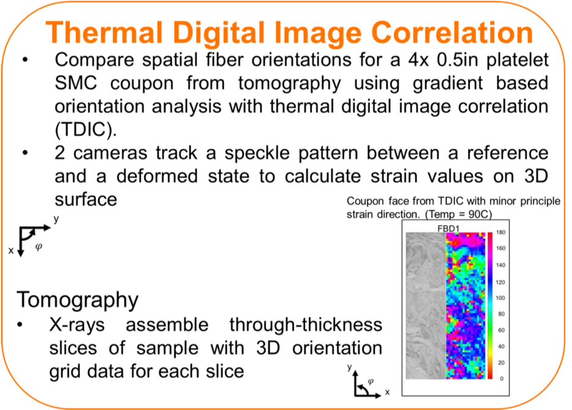

Mechanical characterization
Facility: Science and Research Engineering Facility
LUNA Continuous Strain Sensing
Thermal Digital Image Correlation (TDIC)


Tensile Testing coupled with Digital Image Correlation (DIC) for a +/-45 degree fiber orientation composite sample

Compression testing coupled with Digital Image Correlation (DIC)
Digital Image Correlation (DIC) Strain Evolution

Special Dimensions
ASTM D6641 Combined Loading Compression (CLC) Fixture
Flexural Mechanical Testing Setup
ASTM D790
Thickness: 4.81 mm
In Plane Shear Iosipescu test method coupled with digital image correlation (DIC)
0-45-90 Rosette strain gage mounted on one side and digital image correlation speckle pattern on other side
Lap Shear Mechanical Testing using LUNA Optical Distributed Sensor Interrogator coupled with Digital Image Correlation (DIC)
Interlaminar Shear Strength (ILSS) Mechanical Testing Setup
ASTM D2344
MTS 88.96 kN (20 kip)
ILSS samples
Tensile Testing coupled with Digital Image Correlation (DIC) for a +/-45 degree fiber orientation composite sample
ISO 527-5
Compression Testing coupled with DIC